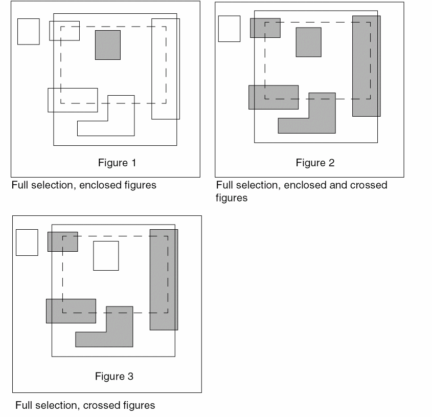
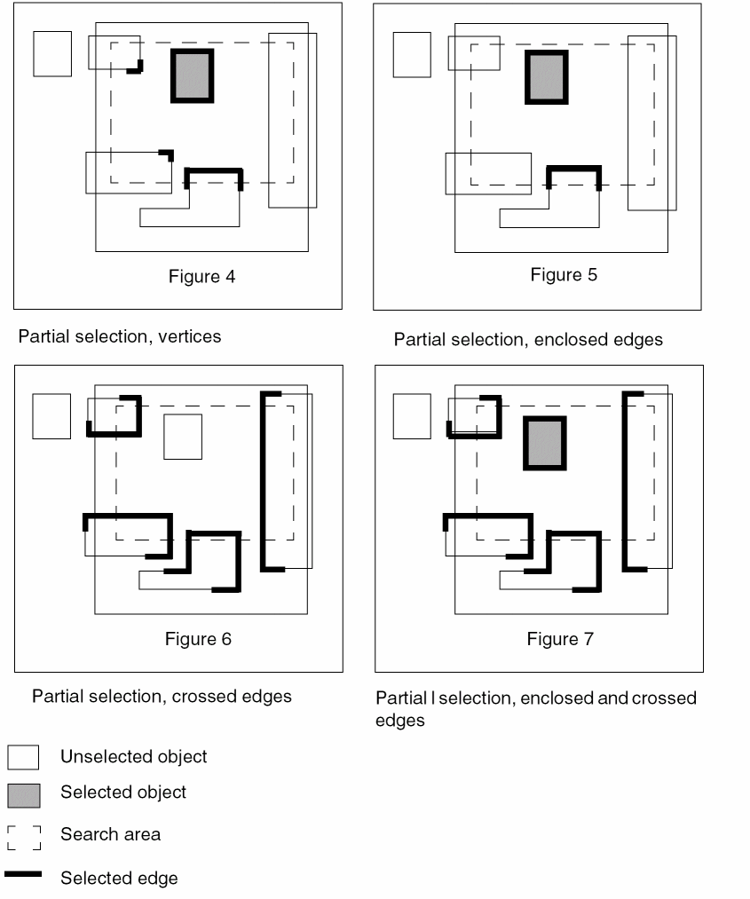

Selecting a Group of Objects
You can select a group of objects by using full or partial selection mode. You can define area selection controls for selection of objects in each mode.
To select a group of objects by using area selection controls in full and partial selection mode:
-
Choose Options – Selection.
The Selection Options form displays. - Select the area selection control from the Full Mode list in the Area Selection Controls section. In full selection mode, you can choose to fully select enclosed figures, crossed figures, or enclosed and crossed figures.
- Select the area selection control from the Partial Mode list. In partial selection mode, you can choose to select vertex, enclosed edges, crossed edges, or enclosed and crossed edges.
-
Choose your selection mode from Mode in the Selection Controls section.
You can quickly toggle between full and partial selection modes by clicking the Full Select icon or the Partial Select icon on the Options toolbar or by pressingF4. - Click OK or Apply.
-
Draw the area selection box on the canvas to choose the objects.
The objects are selected according to the area selection control set in the Selection Options form.
Parameterized cells can only be selected fully. They are fully selected when you completely enclose them with the area selection box, irrespective of the selection mode setting.
The following figures illustrate object selection in full and partial selection modes based on area selection controls set in the Selection Options form.


Related Topics
Return to top